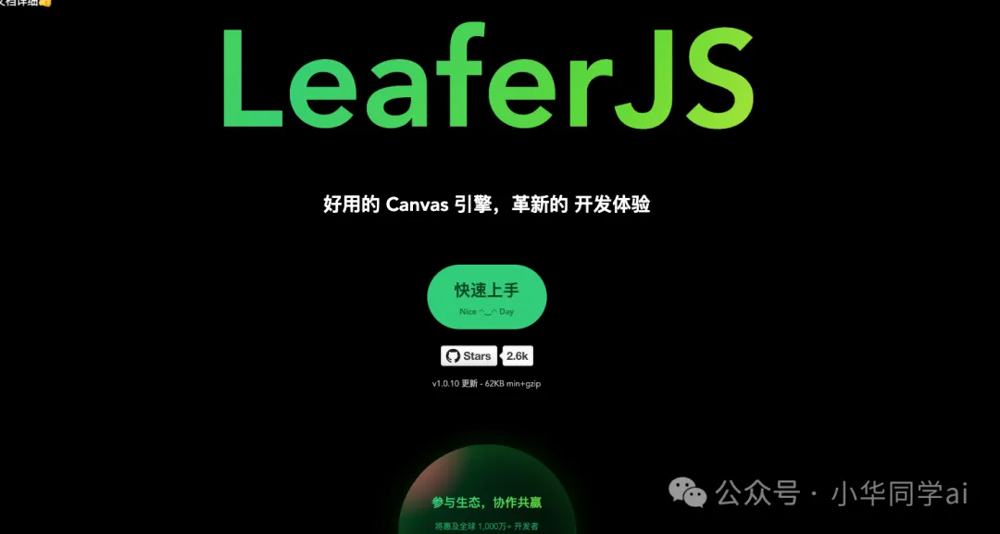
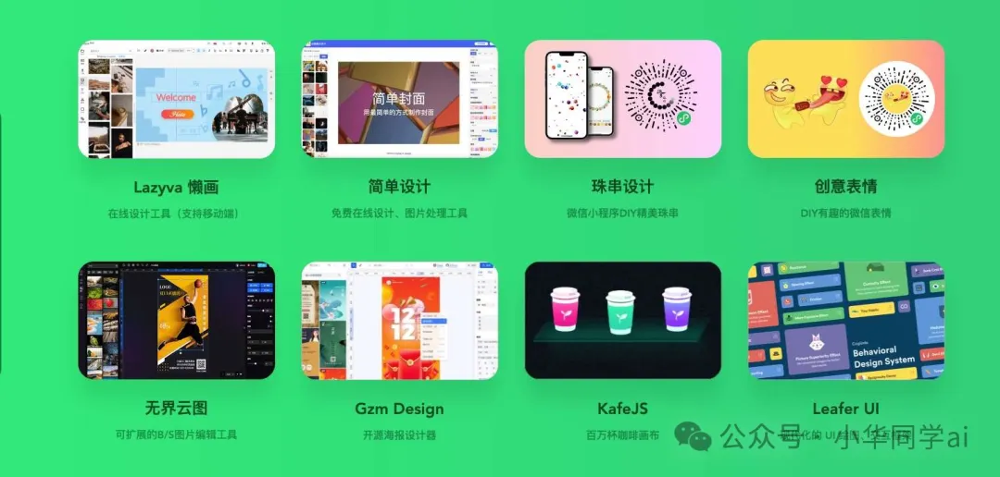
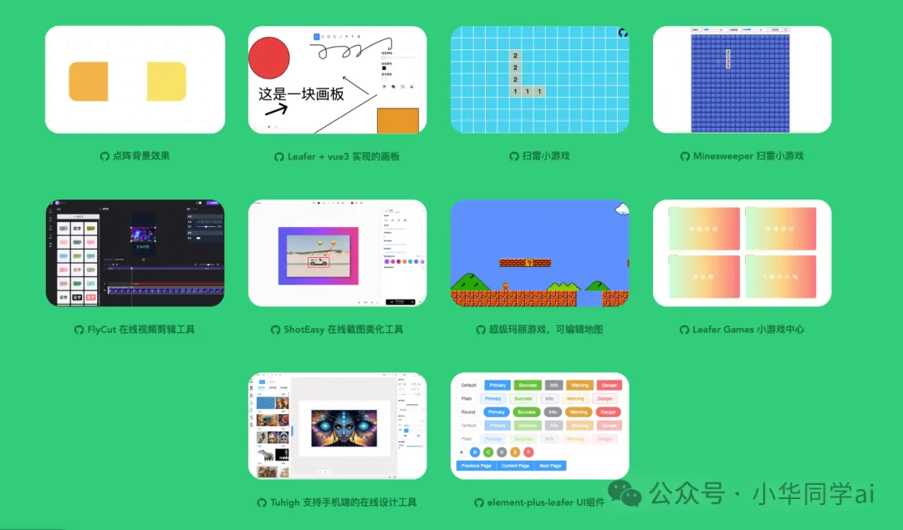
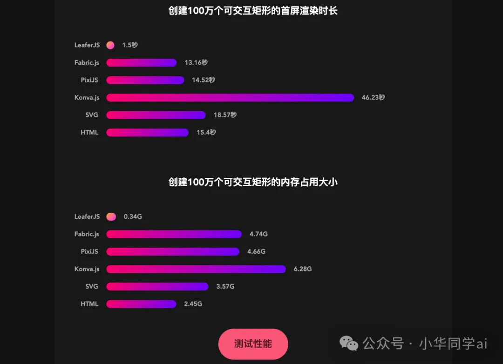

LeaferJS 是一款免费开源的 HTML5 Canvas 2D 图形渲染引擎，它拥有瞬间创建 100 万个图形的超强能力，可结合 AI 进行绘图，生成界面。LeaferJS 易学易用，场景丰富，能够让你轻松构建出各种炫酷的图形应用。
核心优势
LeaferJS 拥有诸多核心优势，使其成为图形渲染领域的佼佼者：
- 高效绘图： LeaferJS 能够高效地绘制海报、插图、界面，以及组态、可视化数据等，甚至可以用于训练 AI 绘图。
- 图形图像编辑： LeaferJS 支持丰富的图形编辑功能，可用于海报、图片编辑器，以及建筑、雕刻等矢量软件，支撑专业设计软件。
- 网页、应用： LeaferJS 支持交互状态、滚动条，以及自动布局、组件化、HTML 互转等功能，可用于构建网页、应用等。
- 游戏、动画： LeaferJS 支持 WebGPU/WebGL 加速，可用于构建游戏、动画、路径动画、变形等应用。
应用场景
LeaferJS 的应用场景非常广泛，包括但不限于：
- 在线设计： 类似于 Figma、InVision、Canva 等在线设计工具。
- 在线白板： 类似于 Miro、Mural、Microsoft Whiteboard 等在线白板工具。
- 在线文档： 类似于 Notion、Google Docs、Microsoft Office365 等在线文档工具。
- 无代码平台： 类似于 Webflow、Framer 等无代码平台。
- 应用框架： 类似于 Flutter、PixiJS 等应用框架。
- 数据可视化： 类似于 D3.js、Chart.js、ECharts.js 等数据可视化库。
- 在线设计: 例如 Figma、InVision、Canva 等。
产品案例
LeaferJS 已经被广泛应用于各种产品中，例如：
- Lazyva 懒画： 在线设计工具，支持移动端。
- 简单设计： 免费在线设计、图片处理工具。
- 珠串设计： 微信小程序 DIY 精美珠串。
- 创意表情： DIY 有趣的微信表情。
- 无界云图： 可扩展的 B/S 图片编辑工具。
- Gzm Design： 开源海报设计器。
- KafeJS： 百万杯咖啡画布。
- Leafer UI： 现代化的 UI 绘图、交互框架。
- Wodisign： 产品设计协作平台。

场景案例
LeaferJS 还可以用于构建各种场景案例，例如：
- 点阵背景效果
- Leafer + vue3 实现的画板
- 扫雷小游戏
- 在线视频剪辑工具
- 在线截图美化工具
- 超级玛丽游戏，可编辑地图
- Leafer Games 小游戏中心
- 支持手机端的在线设计工具
- element-plus-leafer UI 组件

性能说明

易学易用
LeaferJS 非常易于学习和使用，下面是一个简单的示例：
import { Leafer, Rect } from "leafer-ui";
// 创建一个自适应窗口的应用，可缩放、滚动视图
const leafer = new Leafer({ view: window });
// 创建一个可以被拖拽的矩形
const rect = new Rect({
x: 100,
y: 100,
width: 200,
height: 200,
fill: "#32cd79",
draggable: true,
});
leafer.add(rect);
同类项目
除了 LeaferJS 之外，还有一些其他的图形渲染引擎，例如：
- Fabric.js： 一个强大的 JavaScript 图形库，可以轻松处理画布上的对象。
- PixiJS： 一个专注于 2D 游戏和动画的图形库。
- Konva.js： 一个基于 Canvas 的 2D JavaScript 库，用于构建高性能的图形界面。
- SVG.js： 一个轻量级的 JavaScript 库，用于操作 SVG 元素。
- HTML5 Canvas： HTML5 标准的一部分，用于在网页上绘制图形。
这些图形渲染引擎各有其特点和优势，开发者可以根据自己的需求选择合适的引擎。
总结
LeaferJS 是一款功能强大、易学易用的 HTML5 Canvas 2D 图形渲染引擎，它能够让你轻松构建出各种炫酷的图形应用。无论你是一个开发者，还是一个设计师，LeaferJS 都值得你尝试。
项目地址
https://github.com/leaferjs/leafer-ui